Towards Progress Reasoning in Vision-Language Models
Humans can perceive "what is happening in a scene" and situate it within the dynamic structure of a task, allowing them to "estimate task progress from a single observation". We study whether VLMs possess a similar form of progress reasoning by following:
Progress-Bench: Systematically evaluate whether VLMs can perform progress reasoning from a single observation under controlled variations of demonstration modality, viewpoint, and answerability.
Progress Reasoning Paradigm: Examine whether a human-like two-stage reasoning process of episodic retrieval and mental simulation is effective through either training-free prompting or training-based learning.
Comprehensive Evaluation and Insights: Analyze what VLMs can do, how they behave, why and where progress reasoning succeeds or fails.
Estimating task progress requires reasoning over long-horizon dynamics rather than recognizing static visual content. While modern Vision-Language Models (VLMs) excel at describing
what is visible, it remains unclear whether they can infer how far a task has progressed from partial
observations. To this end, we first introduce PROGRESS-BENCH, a benchmark for systematically
evaluating progress reasoning in VLMs. Beyond benchmarking, we further explore a human inspired two-stage progress reasoning paradigm through both training-free prompting and
training-based approach based on curated dataset PROGRESSLM-45K. Experiments on 14 VLMs
show that most models are not yet ready for task progress estimation, exhibiting sensitivity
to demonstration modality and viewpoint changes, as well as poor handling of unanswerable
cases. While training-free prompting that enforces structured progress reasoning yields limited
and model-dependent gains, the training-based PROGRESSLM-3B achieves consistent improvements even at a small model scale, despite being trained on a task set fully disjoint from the
evaluation tasks. Further analyses reveal characteristic error patterns and clarify when and why
progress reasoning succeeds or fails.
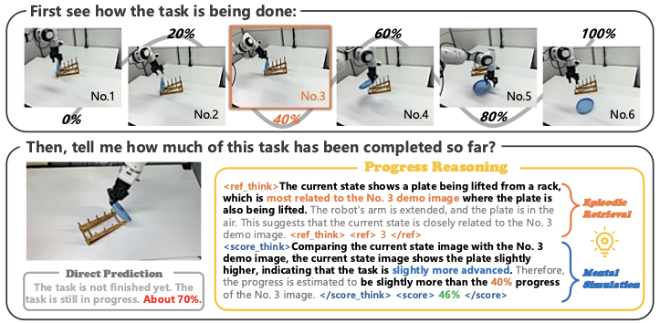
Figure 1:
Given a task demonstration and a single observation, the goal is to estimate
how much of the task has already been completed.
Direct prediction can often judge whether the task is unfinished, but struggles to assign a progress score.
Progress reasoning instead follows a coarse-to-fine process:
it first performs
episodic retrieval
to coarsely locate the observation along the demonstrated task,
then uses
mental simulation
to imagine the transition from the anchor to the current observation,
enabling a fine-grained estimate of completed progress,
which leads to accurate and interpretable progress estimation.
PROGRESS-BENCH evaluates whether a model can situate a single observation within the temporal structure of an ongoing task,
going beyond static perception to reason about task progression.
Rather than introducing all design factors at once, we construct the benchmark in successive stages,
gradually increasing the reasoning challenges involved in progress estimation.
Specifically, PROGRESS-BENCH is designed around three key dimensions:
Demonstration Modality.
We vary how task demonstrations are presented, including either vision-based (key frames showing complete world states) and text-based (step-by-step action descriptions) demonstrations
to study progress reasoning under explicit versus implicit state information.
Viewpoint Correspondence.
We control whether observations share the same viewpoint as the demonstration or come from a different view,
enabling evaluation of robustness to viewpoint changes beyond visual similarity.
Answerability.
We distinguish between answerable and inherently ambiguous cases,
testing whether models can estimate progress when well-defined and abstain when it is not.
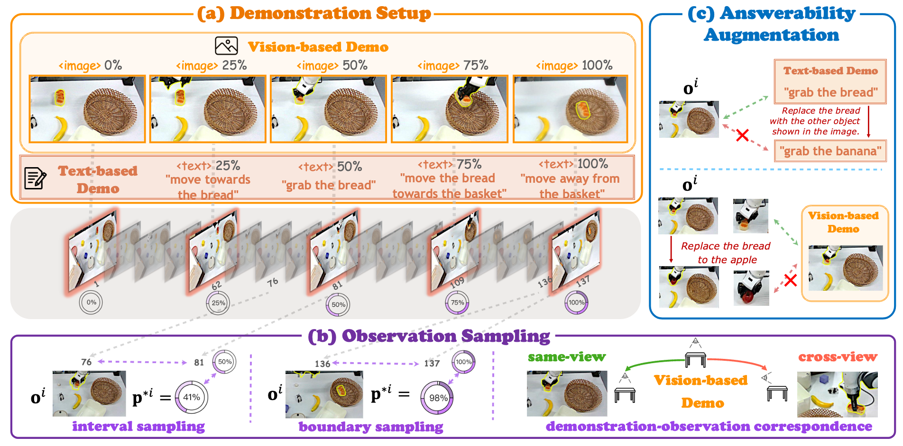
Figure 2: Progress-Bench construction.
(a) Demonstration Setup provides vision-based key-frame demonstrations or text-based step descriptions with progress annotations.
(b) Observation Sampling selects observations between or near demonstration steps, with progress assigned by interpolation; vision-based settings include same-view and cross-view cases.
(c) Answerability Augmentation creates unanswerable samples by introducing mismatches between demonstrations and observations.
Towards Progress Reasoning in VLMs
We frame progress reasoning as a human-inspired two-stage process (Figure 1).
Given a demonstration and a partial observation, humans first perform episodic retrieval to identify a representative reference step as a coarse anchor, and then apply mental simulation to reason how the task state evolves from this anchor to the current observation. This formulation treats progress estimation as reasoning over a latent task trajectory, rather than matching observations to fixed timestamps.
Training-Free Approach
We instantiate this two-stage reasoning via structured prompting without parameter updates.
The prompt enforces an explicit schema with four fields:
<ref_think> (episodic retrieval reasoning),
<ref> (retrieved reference step),
<score_think> (mental simulation),
and <score> (final progress estimate),
which the model follows at inference time.
Training-Based Approach
We further explore a training-based strategy to explicitly teach the two-stage reasoning process of episodic retrieval and mental simulation.
We first perform supervised fine-tuning on our ProgressLM-25K-CoT dataset to internalize the structured reasoning format, where each example includes a task demonstration, a single observation, and a target reasoning trace specifying the reference step and progress score. To improve robustness and score calibration, we further apply a reinforcement learning stage that jointly rewards structured output, accurate reference retrieval, and precise progress estimation.
This two-stage training procedure encourages models to produce interpretable reasoning while improving reliability under challenging progress estimation scenarios.
Data Source and Statistics
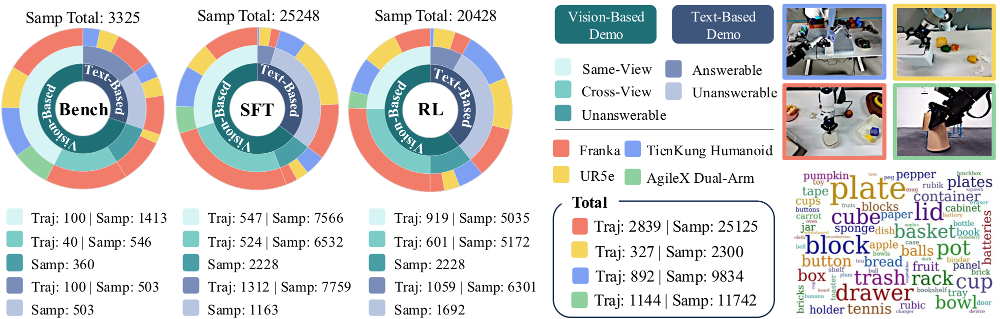
Figure 3: Statistics of Progress-Bench and ProgressLM-45K (25K-CoT for SFT while 20K for RL) based on RoboMind. Traj and Samp denote the numbers of task trajectories and sampled observations to be estimated. The upper-right panel shows the distinct robotic embodiments included, while the lower-right panel visualizes the diversity of objects involved.
Results, Analysis, and Findings
Performance on Answerable Scenarios
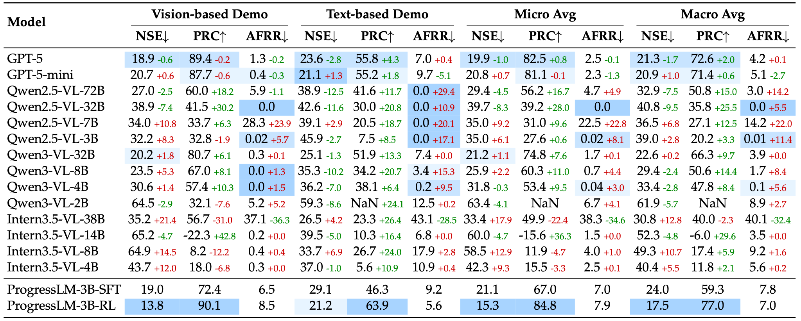
Table 1: Performance comparison on answerable samples under vision-based and text-based demonstrations.
We report Normalized Score Error (NSE) ↓, Progress Rank Correlation (PRC) ↑,
and Answerable False Rejection Rate (AFRR) ↓, with micro and macro averages.
Best,
Second Best, and
Third Best results are highlighted.
Colored deltas indicate the effect of training-free progress reasoning relative to direct prediction
(green: improvement;
red: degradation).
How well do current VLMs perform at progress estimation?
Overall, current VLMs show limited and highly unstable progress estimation under direct prediction (high NSE),
with strong sensitivity to demonstration modality and frequent failures in producing coherent progress rankings (low PRC).
Does training-free progress reasoning help?
Training-free, human-inspired prompting benefits only large-scale models,
while smaller models often suffer degraded accuracy or increased false rejections.
Does training-based progress reasoning help?
Explicit training consistently and substantially improves progress estimation,
enabling even small models to outperform much larger baselines.
Performance under Viewpoint Variation
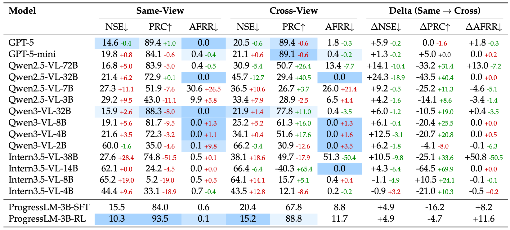
Table 2: Performance under same-view and cross-view observation settings on answerable vision-based demonstrations.
We report Normalized Score Error (NSE) ↓, Progress Rank Correlation (PRC) ↑,
and Answerable False Rejection Rate (AFRR) ↓, with micro and macro averages.
Best,
Second Best, and
Third Best results are highlighted.
Colored deltas indicate the effect of training-free progress reasoning relative to direct prediction
(green: improvement;
red: degradation).
How do current VLMs handle viewpoint changes?
Most VLMs experience a clear performance drop under cross-view observations,
with higher score errors and disrupted progress ordering,
particularly for small and medium-sized models that rely on visual similarity.
Does progress reasoning improve robustness under viewpoint variation?
Training-free reasoning provides only limited and model-dependent robustness,
mainly preserving relative progress ordering rather than improving accuracy.
In contrast, training-based progress reasoning yields consistently stronger cross-view generalization,
substantially reducing the gap between same-view and cross-view settings.
Performance on Unanswerable Scenarios
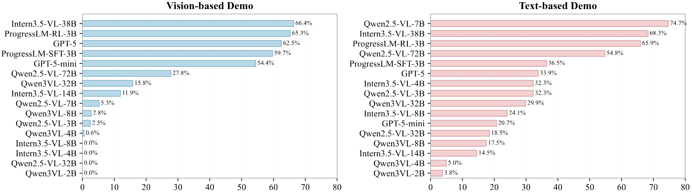
Figure 4: Unanswerable Detection Accuracy (UDA)↑ across models under two settings.
Can models handle unanswerable scenarios appropriately?
Most VLMs fail to reliably recognize when progress estimation is not possible,
often producing arbitrary scores instead of abstaining.
In contrast, ProgressLM consistently identifies unanswerable cases,
while avoiding overly conservative behavior that rejects valid, answerable inputs.
Distribution of Predicted Score Analysis
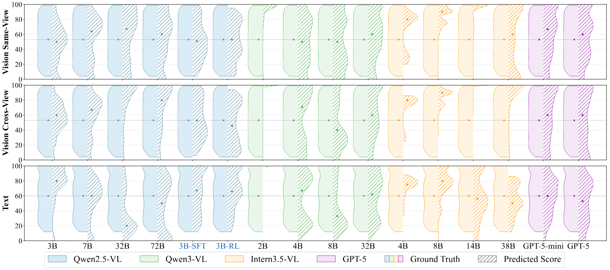
Figure 5: Distribution of predicted progress scores.
Some models exhibit collapsed or clustered distributions at extreme or discrete values,
indicating reliance on heuristic anchors rather than continuous progress modeling.
In contrast, GPT-5 and ProgressLM (3B-SFT and 3B-RL) produce smoother distributions,
reflecting improved sensitivity to intermediate task progress.
What patterns emerge in predicted progress score distributions?
Predicted scores frequently exhibit degenerate distribution patterns rather than smooth variation:
(i) single-peak collapse at extreme values (e.g., 0% or 100%);
(ii) multi-peak clustering around a few heuristic anchors;
(iii) central-peaked distributions concentrated near the midpoint;
and (iv) smooth, continuous distributions spanning the full range.
Only explicitly trained models consistently exhibit pattern (iv),
explaining their more stable and meaningful progress ranking behavior.
Distribution of Per-sample Error Analysis
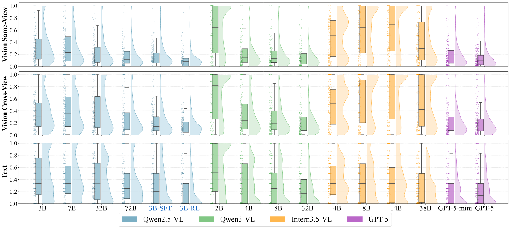
Figure 6: Raincloud plots of per-sample normalized score prediction error across models and settings.
Each plot combines jittered samples, box plots, and kernel density estimates.
Smaller models exhibit highly dispersed and heavy-tailed error distributions, while larger and our models show more concentrated errors with fewer extreme outliers.
How do error distributions reflect robustness in progress estimation?
Smaller models exhibit broad, heavy-tailed error distributions with frequent large errors,
reflecting unstable progress estimation.
In contrast, explicit progress reasoning substantially tightens error distributions,
with trained models suppressing extreme-error cases and achieving more robust per-sample predictions.
Coupled Two-Stage Progress Reasoning
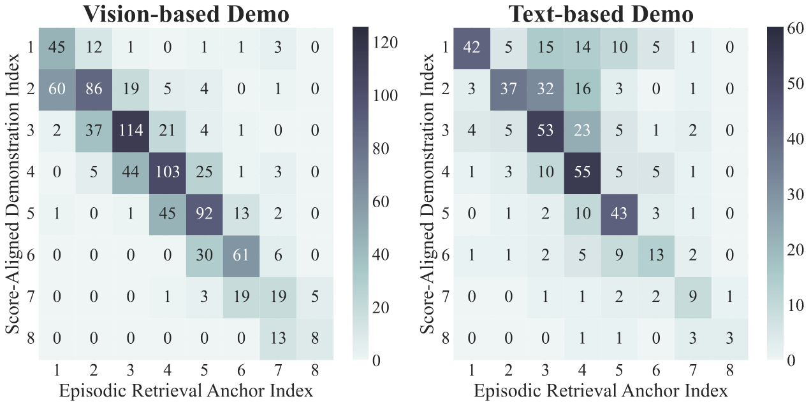
Figure 7: Coupling between the two stages progress reasoning of ProgressLM.
A diagonal concentration indicates that the anchor selected during episodic retrieval consistently constrains second-stage mental simulation.
The vertical axis corresponds to the Score-Aligned Demonstration Index, i.e., the demonstration step whose annotated progress is closest to the final predicted score.
Are the two reasoning stages coupled rather than independent?
Yes. The reference anchor retrieved during episodic retrieval systematically constrains subsequent progress estimation,
with training-based models exhibiting strong alignment between retrieved anchors and final progress predictions,
indicating that mental simulation is directly guided by the retrieved task stage.
Implicit State Accumulation in Text-Based Demonstrations
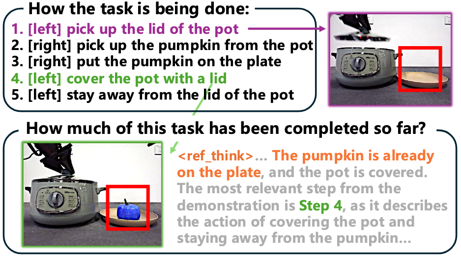
Figure 8: Illustration of implicit state accumulation in text-based demonstrations.
Although Step 1 (purple) and Step 4 (green) appear action-wise similar that interact with the pot lid, they differ in whether the pumpkin has already been placed on the plate (red box).
Correctly identifying the current progress stage therefore requires integrating intervening steps to recover the accumulated state.
Why are text-based demonstrations harder than vision-based ones?
Text-based demonstrations require implicit accumulation of world state over time,
since actions must be integrated to infer the underlying state.
Unlike vision-based demonstrations that allow direct state matching,
progress estimation here depends on maintaining and updating hidden task states rather than relying on surface-level action semantics.
Case Studies
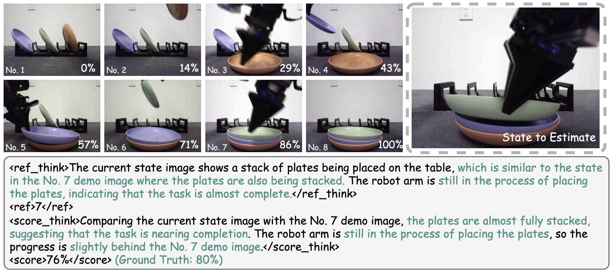
Figure 9: Vision-Based Demonstration Case Visualization (Same-View).
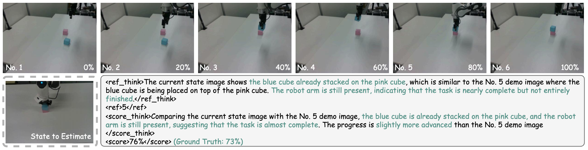
Figure 10: Vision-Based Demonstration Case Visualization (Cross-View).
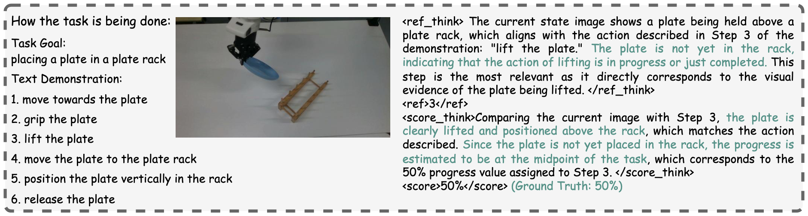
Figure 11: Text-Based Demonstration Case Visualization.
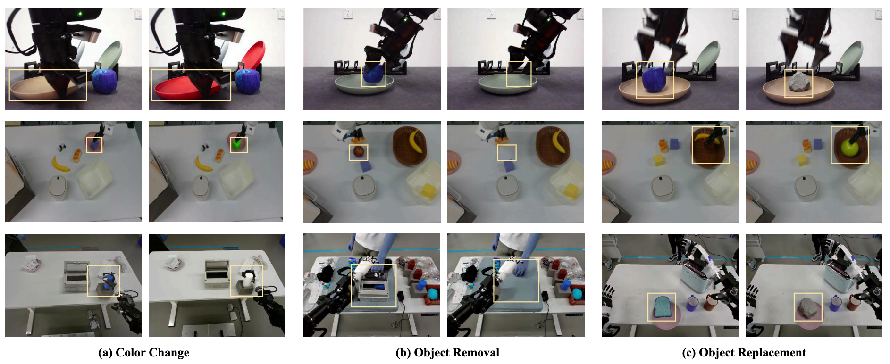
Figure 12: Case Visualization of vision-based unanswerable samples construction via Image Editing. To test whether models can recognize ill-defined progress, we construct visual unanswerable samples by breaking the semantic consistency between demonstrations and observations while preserving realism. Given an image at a specific manipulation step, we edit the key object using three strategies: (a) Color Change, altering object appearance; (b) Object Removal, eliminating the critical object; and (c) Object Replacement, substituting it with an incompatible one.
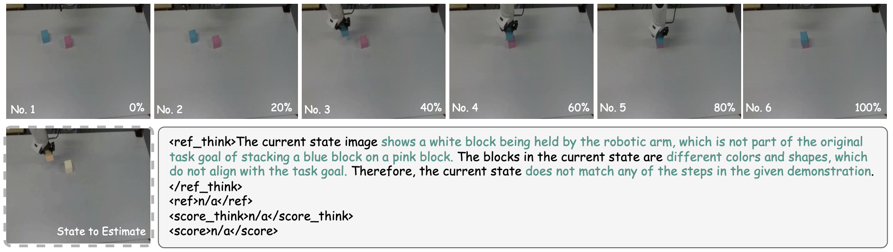
Figure 13: Vision-based Demonstration Unanswerable Case Visualization.
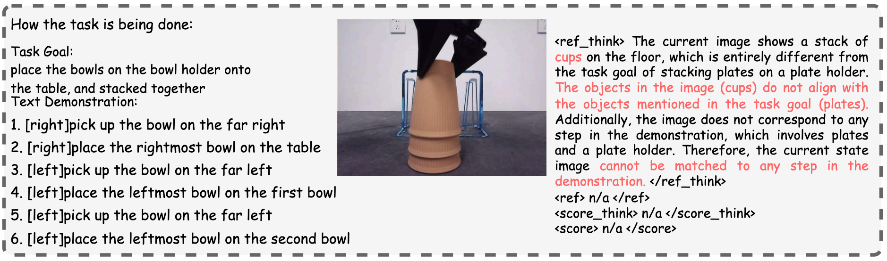
Figure 14: Text-based Demonstration Unanswerable Case Visualization.
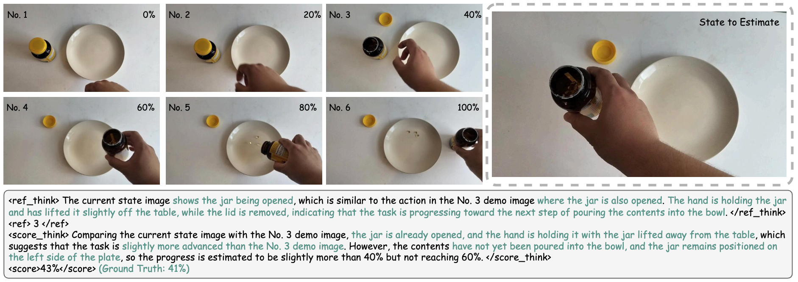
Figure 15: In-the-wild Generalization on Human Activities.
Conclusion
We study progress estimation as a long-horizon, dynamic reasoning problem beyond static visual understanding.
We introduce Progress-Bench to systematically evaluate progress reasoning from a single observation under controlled variations of modality, viewpoint, and answerability.
Experiments on 14 VLMs show that existing models struggle with this task, exhibiting strong sensitivity to modality and viewpoint changes, degenerate progress predictions, and weak handling of unanswerable cases.
Our analyses expose systematic failure modes in existing VLMs and show that robust progress estimation emerges only when coarse anchor retrieval and fine-grained reasoning are explicitly learned.
Acknowledgement
We would like to thank to Cambrian authors for providing this webpage template.